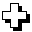
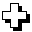

|
|
A klasszikus kártyacsomag lapjai
A csomag minden lapját színe és jelzése azonosítja. A kék,
piros,
zöld
és
sárga alapszíneken kívül vannak
“fekete” (szürke), illetve “átlátszó”
(“égszínû”, világoskék) lapok is, valamint speciális, lila
lapok. Az alapszínû és fekete lapok az ún. színes lapok. A lila szín színkérésre jogosít: az ilyen lapot lerakó játékos határoz meg színt az alapszínek közül.
Az átlátszó pedig metaszín, az ilyen lapoknak nincs állandó színük. Lerakásukkor mindig úgy kell tekinteni, mintha
olyan színûvé válnának, amilyenre rárakják õket. A lila és az átlátszó lapok az ún. színtelenek, az átlátszó lapok színes lappá válnak,
ha színes laphoz hasonulnak.
A lapok jelzéseinek készlete igen gazdag:
-
a játék alapját képezõ, hagyományos
turistajelzéseknek megfelelõ
alakzatok:
 – sáv, 
– kereszt, – sáv, 
– kereszt,  – kör, – kör,  – háromszög,
– háromszög,  – négyzet, – négyzet,  – barlang,
– barlang,  – rom, – rom,  – körút;
– körút;
-
különleges jelentésû jelek:
– fordító,  – ász,
– ász,  – (lánc)sorozó, – (lánc)sorozó,  – jelzéskérõ v. formakérõ,
– jelzéskérõ v. formakérõ,  – színkérõ,
– színkérõ,  – ketteshúzó, – ketteshúzó,  – négyeshúzó,
– négyeshúzó,  – (lap)elhúzó
(kézbõl húzó), – (lap)elhúzó
(kézbõl húzó),  – variáló,
– ix (kimaradó, null-laphúzó, passzlap), – variáló,
– ix (kimaradó, null-laphúzó, passzlap),  – pipa (lapeldobó),
– pipa (lapeldobó),  –
újrahasznosító, –
újrahasznosító,  – kiosztó,
– keverõ, – kiosztó,
– keverõ,  – cserélõ (cserelap), – cserélõ (cserelap),  – (lap)továbbadó;
– (lap)továbbadó;
Egyes lapokon a jelzés helyén a kétféle kérdõjel ( , ,  )
valamelyike áll, ezek metajelzések: játék közben, mindig ideiglenesen kapnak jelzést. )
valamelyike áll, ezek metajelzések: játék közben, mindig ideiglenesen kapnak jelzést.
A jelzések egy része a színes lapokon (kék,
piros,
zöld,
sárga
illetve az egyetlen fekete)
fordul elõ (a turistajelzések és a , , , , , , , );
mások a színteleneken, azaz a lilákon (, , , , , , )
és az átlátszó lapokon (, , ).
Megjegyzendõ, hogy a játék során színes lap is lehet olyan jelzésû, amely
egyébként színtelenre jellemzõ: a-es
lapok pl. felvehetik lila lap jelzését is.
Bizonyos, jelzésû kártyalapok
átlósan el vannak felezve. Ezek a lapok “kétszínûek”, a játék során mindenki
a számára éppen akkor kedvezõbbet veheti figyelembe a két szín közül. Az
összes lehetséges színkombinációhoz tartozik ilyen lap (K/P,
K/Z,
K/S,
P/Z,
P/S,
Z/S).
Jelzés szempontjából ezek teljesen egyenrangúak az egyszínû -lapokkal.
Megemlítendõ még a fekete szín, amely “nemlétezõ”
színnek tekintendõ. Nem tartozik ugyanis a négy alapszín közé, bár színes lapnak
számít az egyetlen ilyen lap, a fekete .
Ez a más kártyajátékokból ismert “Fekete Péter”-hez hasonlít.
A kártyalapok részletes leltárja
Színes lapok
A négy színbõl (kék, piros,
zöld,
sárga)
színenként
2–2 db: , , , , , , , ;
2–2 db: , , , , , , ;
1–1 db: , ;
valamint 1 db fekete
és 1–1 db átlósan elfelezett kétszínû
az összes kombinációban (K/P,
K/Z,
K/S,
P/Z,
P/S,
Z/S).
Színtelen lapok
Lila lapok:
4–4 db: , , ,
2–2 db: , , , .
Átlátszó (égszínû, világoskék) lapok:
2–2 db: , ;
1 db: .
Összesen 160 lap.
A hagyományos játékváltozat részletes szabályai
A játék kezdete: jelzéslap, kezdõlap, osztás
A kártyacsomagot megkeverve az asztalra tesszük és egy lapot színével
felfelé fordítva keresztbe a pakli alá csúsztatunk (lehetõleg úgy, hogy
mindneki lássa). Ez lesz az ún. “jelzéslap”, a színes -es
lapok a játék során ennek jelzését veszik fel.
Pl.: amíg a jelzéslap sárga ,
addig a piros
piros -et, a zöld
zöld -et, stb. jelent;
pontosabban fogalmazva a piros
és a piros
minden szempontból ugyanolyannak számít.
A jelzéslap a játék során változhat, errõl késõbb lesz szó.
Mindenki kap 6–6 lapot (vagy megegyezés szerint többet) és egy lap kerül
színével felfelé az asztal közepére, ez lesz a kezdõlap. Ha kezdõlap
nem turistajelzéses, akkor az alábbiakat kell figyelembe venni (az egyes
jelzések jelentésérõl késõbb külön fejezet szól):
-
A speciális jelzésû lapokat három csoportra lehet osztani: a -,
a - és a -lap
érvényesül akkor is, ha kezdõlap, és úgy kell tekinteni, mintha az osztó
rakta volna le (pl. õ kérhet színt). A másik csoportba az
és a tartozik, ezek sem
vesztik el jelentésüket és a kezdõ játékos élhet a speciális sorozás lehetõségével.
Végül az utolsó csoportot alkotja az összes többi, jelentésük kezdõlapként
nem érvényesül.
-
Színtelen (Lila vagy
átlátszó ) kezdõlap esetén, vagy ha
nem határozható meg a kezdõlap jelzése (mert ,
vagy mert a jelzéslap metajelû (?-es) és a kezdõlap ), új kezdõlapot kell húzni.
A játék célja
A játékot az nyeri meg, akinek elõször fogynak el kezébõl a kártyalapjai (úgy, hogy
miután az utoljára lerakott lap jelentése is érvényesül, nem marad kártyája).
A játék menete
A játékot az osztó utáni játékos kezdi: a kezében lévõ lapok közül a kezdõlapra
azzal színben vagy jelzésben megegyezõ lapot rak (vagy lilát,
ld. lent). A többiek is sorban így tesznek, de mindig az utoljára lerakott
lap számít (az ún. aktuális lap), láncszerûen kell tehát folytatni
a sort. A részletes lerakási szabályok a következõ fejezetben szerepelnek.
Aki nem tud vagy nem akar rakni, húz egy lapot a pakliból.
A húzott lap csak a következõ körben rakható le.
Ha egy játékos
jelzésû lapot tesz, a "menetirány" az ellenkezõjére fordul, azaz legközelebb
az elõtte ülõ fog következni, s ez így marad újabb
lap lerakásáig (fordítás).
Lapok lerakhatósága
Alapesetben színben vagy jelzésben illeszkedõ lapot lehet lerakni, de számos
ezt kiegészítõ lehetõség, illetve adott esetben felülbíráló szabály van, ezek a következõk:
Átlátszó lapok
Az átlátszó lapok színben minden
lapra illeszkednek, ti. egy ilyen lap lerakásakor "felveszi" az alatta
lévõ kártya színét. -es
lap esetén nem csak a szín, hanem a jelzés is hasonul (nem tévesztendõ
össze a -lel, ami a jelzéslap
jelét veszi fel). Ezekkel a kérdõjeles metajelzésekkel részletesebben külön fejezet foglalkozik.
Sorozás
Több azonos jelzésû lap egyszerre lerakható (ez az ún. “sorozás”),
de természetesen a legalulra tett lapnak illeszkednie kell (színben vagy
jelzésben) az aktuális laphoz.
Érvényes lerakás lehet pl. egy sárga
lapra: egy sárga ,
rá egy átlátszó
(ez így szintén sárga-nek
számít) és még rá egy zöld .
A nem turistajelzéses lapoknak van valamilyen egyéb jelentése is, amely
lerakásukkor érvényesül (pl. a -nál
a következõ játékosnak két lapot kell húznia, a -nál
a játék iránya megfordul). Minden egyes jelzésrõl lesz szó részletesen
a késõbbiekben. Most egyelõre csak annyit, hogy az ilyen lapok is sorozhatók,
a és az
kivételével!
Beszúrás
A beszúrás egyfajta “ugrást” jelent a játékosok sorrendjében.
Csak akkor van rá mód, ha az utoljára lerakott lap turistajelzéses. Ha
a játék során – függetlenül attól, hogy éppen ki következik – egy
játékosnak az aktuális lappal egyezõ színû és (turista-)jelzésû lapja van,
lerakhatja azt (sorozhat is rá), és tõle folytatódik a játék.
Beszúrni a játék elején is lehet, így a beszúró játékos
magához ragadja a kezdés jogát.
Ha valaki több lapot tesz le egy körben (pl. sorozáskor), ezek közé nem
lehet beszúrni, csak ha már továbbadta a lehetõséget a következõ játékosnak
és õ még nem kezdett el rakni.
Nyilvánvaló, hogy átlátszó
bármilyen (turistajelzéses) lapra beszúrható, hiszen hasonul hozzá színben
és jelzésben.
A kétszínû lapok is beszúrhatók, illetve rájuk is lehet beszúrni.
Pl.: piros-ra
kék/piros,
vagy fordítva; sõt, kék/piros-ra
piros/zöld
is érvényes beszúrás).
Kérõ- és extrasorozó lapok
A szín-,
a jelzéskérést jelent. Mivel ezek kérõlapok, rájuk nem a hagyományos
"színre-szín vagy jelre-jel" lerakási szabály vonatkozik. Csak a kérésnek megfelelõ lap tehetõ rájuk. Másik, egyezõ jelzésû kérõlappal viszont felülbírálhatók,
továbbá színben illeszkedõ -szal hatástalaníthatók.
Szintén eltérõ szabályok érvényesek vagy
jelzésû lapokra való lerakáskor, ez utóbbiak az ún. extrasorozó lapok.
Lila lapok, vétózás
Lila lap bármilyen színû lapra rátehetõ
és ilyenkor a négy alapszín közül kérni kell egyet. A rákövetkezõ játékos
a kért színnek megfelelõ lapot kell tegyen, vagy másik lilát (vagy átlátszót,
de az értelemszerûen lilának számít ilyenkor). Ha nem tud rakni, húz; és
a színkérés addig érvényben marad, amíg a lila lap van a lerakott lapok
halmának tetején. Fontos szabály, hogy a lila
lapok nem sorozhatók; illetve ha valaki lilát rak, akkor abban a körben
csak azt az egyetlen lapot teheti le! A
egyszerû színkérõ, de az ilyen jelzésûek kivételével az összes lila lapnak van egyéb jelentése is.
Egy lerakott lila lap jelentése nem biztos, hogy érvényesül: vétójoggal
rendelkeznek azok a játékosok, akiknek ezzel megegyezõ lila lapjuk van
(vagy átlátszó ,
ami ti. olyannak számít, amilyenre rárakják), és ha közülük valaki bedobja
az ilyen lapját, azzal érvényteleníti. A vétózó játékos kérhet színt, és tõle folytatódik
a játék.
A lapok többször is vétózhatók.
Elõfordulhat, hogy a jelzéslap lila,
a példa kedvéért legyen most
jelzésû. A -es lapok színe
természetesen ilyenkor sem változik meg, a -ek
“személyében” létrejönnek piros, kék,
sárga ill. zöld -lapok;
ámbár ilyenek eredetileg nem szerepelnek a kártyacsomagban. Jelzésük szerinti
jelentésük (most – négyeshúzó)
a lilákéval azonos marad, de mivel ezek színes lapok, sorozhatók. Szín viszont nem kérhetõ
velük, kivéve természetesen a
jelzés esetét.
Kimaradás és kötelezõ húzás, halmozás
A , , , és jelzésû lapok az ún. utasító lapok. Ez azt jelenti, hogy a következõ játékos kimarad
a körbõl és (a lerakott lap jelzésétõl függõen) húznia kell vagy az utasító lapot lerakó
játékos eldobhat lapo(ka)t a pakli tetejére. Ha azonban a következõ játékosnak van olyan
utasító lapja, ami színben vagy jelzésben illeszkedik (lilánál a kért szín számít),
ráteheti és így összeadódik a két utasítás (húzandó lapmennyiség) és az õutána következõ
játékosra hárul, aki szintén halmozhat, ha tud. Miután a kimaradás, illetve a kötelezõ húzás
teljesítve lett, már a hagyományos lerakhatósági szabályok érvényesek, de addig csak halmozni
lehet. Az utasító lapokon kívül a is használható halmozásra, továbbá -szal hatástalanítani
lehet a kimaradást és a kötelezõ húzást. További részletek az utasító jelzésekrõl szóló fejezetben.
A játék vége
Aki az utolsó lapját is lerakta, megnyerte a játékot. (Lényeges, hogy
ha az utolsó lapnak van valami speciális jelentése, az még érvényesül,
mielõtt a játékos nyerne. Így elõfordulhat, hogy mégsem megy ki a játékból,
mert emiatt lapokat kap (“visszahívás”) Errõl bõvebben az egyes jelzések
leírásánál.)
A lapokon szereplõ jelzések
Ebben a fejezetben a jelzésekkel kapcsolatos tudnivalók szerepelnek. A
lapok jelzésük szerint (a turistajelzések kivételével) a játék menete ill.
a játékosok számára külön jelentéssel bírnak, amely lerakásukkor érvényesül.
A fejezet végén találhatóak a jelzés nélküli lapok metajelzései, amelyek
meghatározzák, hogy milyen valódi jelzést kapnak ezen lapok lerakásukkor.
Ne feledkezzünk meg arról, hogy a lila lapok megvétózhatók még mielõtt
jelentésük érvényesül; illetve hogy lerakásukkor színt kell kérni. Ez utóbbit
azonban az “akció” (pl. lapkiosztás és húzás, csere, stb.) után tehetjük
meg (kivéve ha a következõ játékosnak kell húznia, mint a -lapnál).
Turistajelzések
: sáv,
: kereszt,
: kör,
: háromszög,
: négyzet,
: barlang,
: rom,
: körút
Ezek a jelzések a játék "hagyományos" jelei; lerakásukat nem kíséri egyéb
esemény. Csak ezek a lapok szúrhatók be.
: Fordítójelzés
A hozzá tartozó kártyakép igen hasonló a -hoz,
de az ilyen lapok egészen mást jelentenek: A játék iránya megfordul
(azaz e lap lerakója elõtti játékos fog
következni), és ebben az irányban megy tovább. Újabb
természetesen visszafordítást jelent.
Fontos, hogy az ilyen jelzésû lapok nem sorozhatók (de a következõ
játékos már rárakhat másik -t)!
A -lap használható
kimaradás ill. kötelezõ húzás "továbbpasszolására" is, pontosabban visszahárítására
az elõzõ játékosra (azaz éppen arra, aki a kimaradást jelentõ lapot
lerakta), részletesen ld. a kimaradásról és kötelezõ húzásról szóló fejezetet.
A játék iránya természetesen ilyenkor is megfordul.
“Azonnali hatályú” jelzések
: Variálás
A játékos cserél: felveszi a jelzéslapot és helyette egy tetszõleges
lapot letesz a kezébõl. Cserélni nem kötelezõ.
: Újrahasznosítás
A kézben lévõ lapokat mind be kell dobni és helyettük a legutóbb lerakott
lapokat kell felhúzni. Pontosítva: a játékos (a szóbanforgó -n kívüli) lapjaival
egyezõ számú kártyát elvesz a lerakott lapok halmának tetejérõl. A saját lapjait ráteszi a
halomra, legfelülre a -lapot.
A felvett lapok lesznek ezután az õ lapjai.
Ha -lap lerakásakor nincs
még annyi visszavehetõ lap, amennyire szükség lenne, a maradékot a pakliból
kell felhúzni.
: Kiosztás
A lapok a többiek között szétosztódnak: a játékos a -lapon
kívül megmaradt kártyái helyett ugyanannyi újat húz a
pakliból. A régi lapjait összekeveri és körbeadja; a többiek sorban húznak
egyet-egyet, amíg el nem fogy (a kiosztó játékos nem láthatja, hogyki mit
húz). Természetesen gyakran elõfordul, hogy nem ugyanannyi lapot kap mindenki a kiosztás során.
Akik ugyanis elõrébb vannak, eggyel többet kapnak, ha a lapok nem oszthatók el egyenlõ arányban
a többi játékos között.
: Keverés
Minden játékos bedobja lapjait és megkeverik azokat;
a jelzéslapot is közé rakva. Ezután ebbõl kihúzzák az új jelzéslapot, valamint
mindenki ugyanannyi lapot húz vissza magának, amennyi elõtte volt a kezében.
: Csere
A játékos az általa választott szomszédjával kicseréli összes kézben
lévõ lapját. A játék a cserével ellentétes irányban folytatódik (emiatt
lehet, hogy megfordul az irány). Utolsó lapként lerakva -lapot,
“üres kezet” kell átadni a szomszéd játékosnak, így õ nyeri meg a játékot!
: Továbbadás
A játékos választ egy irányt, és mindenki az arra ülõ
szomszédjának átadja a kezében lévõ összes lapját. A játék az eredeti irányban folytatódik.
A -hez hasonlóan,
aki utoljára rak le ilyen lapot, az üres kezet ad tovább, így a szomszédja
nyeri meg a játékot!
Extrasorozó jelzések
: Láncsorozás
Az ilyen lapot lerakó játékos sorban egymás után ráteheti a lapjait,
amíg azok láncszerûen illeszkednek egymásra (azaz a játék folyamán
különbözõ játékosok egymás után lerakhatnák).
A sor elsõ lapjának illeszkednie kell a -lapra.
Ha szín- vagy jelzéskérõ (, )
kerül a sorba, úgy kell folytatni, mintha a játékos “saját magától kérne”.
Lila
lap viszont egyáltalán nem tehetõ bele a sorba!
A láncsorozásnál csak a legfelülre rakott lap jelentése számít, az esetleges
közbensõ speciális jelentésû lapok (, , ,
stb.) nem érvényesülnek.
Ha a -t lerakó játékos
nem tesz le más lapot, akkor a lácsorozási lehetõség megmarad a következõ
játékos számára (s tovább mindaddig, amíg a -lap
van felül). Ha viszont õ nem akar élni ezzel a lehetõséggel, természetesen
rakhat lila lapot is.
Lila -lap
is létrejöhet: úgy, hogy átlátszó -t
lilára tesz valaki. Ilyenkor – mivel lila lap esetén abban a körben
már más nem rakható le – a következõ játékosé a láncsorozási lehetõség,
akinek viszont a kért színnel kell kezdenie a sort.
(ász): Színsorozás
Az -ra a játékos összes,
az ásszal megegyezõ színû lapját sorban rárakhatja. Kétszínû
is belerakható a színsorba, ha az egyik szín az ásszal egyezõ.
Átlátszó lap is természetesen beletehetõ, hiszen az megfelelõ színûvé
válik; lila lap viszont nem.
Hasonlóan a -laphoz,
ha marad felül, a következõ
játékosé a színsorozási lehetõség, vagy tehet másik -t,
illetve lilát.
Az -ra tett
színsorban lévõ esetleges közbülsõ speciális jelentésû lapok nem érvényesülnek,
csak a legfelülre tett lap. A sor végére az azt lerakó játékos a hagyományos
értelemben nem sorozhat az -tól
különbözõ színû lapokat. Ez akkor is érvényes, ha csak egyféle jelzésû
lapot tesz rá az ászra, sõt úgy is, ha az ászt nem õ rakta le (hanem valaki elõtte).
Pl.: kék-ra
nem sorozható kék
és sárga ,
egyszerre csak a kéket lehet letenni; még akkor is, ha az ászt egy elõzõ játékos
“üresen” rakta le.
Több különbözõ színû
nem sorozható, azaz egy játékos egyszerre csak egy ászt tehet le!
A négy alapszínû mellett
van még egy érdekes ászlap: a fekete v. “nemlétezõ színû”.
Azért nevezhetõ így, mert a fekete nem szerepel az alapszínek között, nem
lehet pl. feketét kérni, ugyanakkor színes lapnak tekintendõ. Lerakni igen
nehéz, hiszen színben nem illeszkedik semmihez, csak jelzésben egy másik -hoz.
Egy ászt viszont általában úgy raknak le, hogy rádobálják az összes vele
egyezõ színû lapot, s így igen ritka eset, hogy felül marad, s egy másik -t
(esetünkben a feketét) rá lehet tenni. Ezért szokás ezt a lapot a “Fekete
Péter”-hez hasonlítani.
Más módon viszont könnyebben is meg lehet tõle szabadulni, pl. egy
másik játékoshoz juttatni , , ,
vagy jelzésû lappal; vagy
eldobni a -, -, -lapok
valamelyikével.
Ha fekete a jelzéslap,
a színes -ek természetesen
ászokat jelentenek, a színük nem válik feketévé.
Ha olyan helyzet áll elõ, hogy a hagyományos módon sikerül
lerakni a fekete -t,
utána értelemszerûen csak lilát vagy másik -lapot,
hiszen más fekete lap nincs. Illetve mégis, mert az átlátszó
lapok feketének számítanak, ha feketére rakják õket, van értelme tehát
annak, hogy a fekete -ra
az összes fekete lap rádobható (bár ez meglehetõsen szélsõséges eset).
Az -nak van még egy
szerepe: hatástalanítja a vele megegyezõ színû , ,
, , , ,
jelzésû speciális jelentésû lapokat (lila
esetén a kért szín számít), melyekrõl a következõ fejezetek szólnak.
Ha az -t hatástalanításra
használják, akkor is megmarad eredeti jelentése, azaz rá lehet rakni az
összes vele egyszínû lapot.
Kérõjelzések
: Jelzéskérés
A játékos az ilyen lap lerakásakor a lapon szereplõ jelzések közül (a
nyolc turistajelzés: , , , , , , , ;
valamint a kilencedik a )
kér egyet. A következõ játékos ilyenkor a kértnek megfelelõ jelzésû
lapot kell tegyen, bármilyen színût. A jelzéskérés addig érvényben van,
amíg a -lapra nem raktak
semmit.
Az egyébként bármilyen színre illeszkedõ lila
lapokat nem lehet -re tenni
(csak akkor lehetne, ha a kért jelzésû lenne), mivel itt csak jelzésbeli illeszkedés számít, színbeli nem.
A jelzéskérés hatástalanítható: a -lappal
azonos színû ásszal () vagy bármilyen
színû másik -lappal.
Ez utóbbi esetben új jelzés kérhetõ.
: Színkérés
Hasonló a -laphoz, csak
itt jelzés helyett a négy alapszín (kék,
piros,
zöld,
sárga) valamelyikét kell kérni.
Amíg a -lap van felül, a
színkérés érvényben van. Ez azt jelenti, hogy csak a kért színnek megfelelõ
lapot lehet tenni, vagy felülbírálni másik, bármilyen színû -lappal,
illetve bármilyen jelzésû lilával.
Színes -lap hatástalanítható
vele azonos színû -szal
(a -hez hasonlóan).
Utasító jelzések
Ezen jelzések jelentése hasonló
és bizonyos értelemben kölcsönösen felülbírálhatók egymással (pontosabban:
jelentésük halmozódva áthárul a következõ játékosra). Mindegyik ilyen lap
lerakásakor a sorban következõ játékos kimarad a körbõl és a lerakott laptól függõen
esetleg húznia kell a pakliból, az elõzõ játékostól, vagy pedig az elõzõ játékos dobhat el lapot.
Sorozáskor a lapszámok összeadódnak.
Érvényes az ún. halmozási szabály: ha valaki utasító lapot tesz
és a következõ játékosnak van vele megegyezõ jelzésû lapja, vagy olyan,
amely azonos színû és szintén utasító jelzésû, lerakhatja
azt a körbõl való kimaradás és kötelezõ húzás helyett. Ilyenkor a lapok
jelentése összeadódik és az egész az õutána következõ játékosra hárul,
aki szintén halmozhat, ha tud; és így tovább.
A kimaradás ill. kötelezõ húzást hatástalanítja a legutóbb lerakott
lappal megegyezõ színû
(lila
esetén a kért szín számít); vagy – szintén színben illeszkedõ – -val
a játék irányát megfordítva visszahárítható az elõzõ játékosra (azaz a ugyan nem utasító lap, de halmozásra használható).
Ha valaki utolsó lapként
rak le ilyen jelzésû lapot, még meg kell várni, hogy a többiek tudnak-e
halmozni. Ha ugyanis a halmozás körbeér, a halmozott mennyiséget fel kell
húznia, s így “visszahívhatják” a játékba.
A jelzések ismertetése után a fejezet végén lesz szabályos halmozási példa.
: ketteshúzó
A következõ játékos kimarad a körbõl és két lapot húz a pakliból. Ilyen jelzésû
kártyával való halmozáskor két lap adódik hozzá az addig összeadott, kötelezõen
a pakliból felhúzandó mennyiséghez. Ha van eldobandó lapmennyiség, akkor ez a lap nem pakliból húzást jelent,
hanem abból kell kivonni a két lapot (amíg van eldobandó lap, utána már pakliból húzást kell venni; pl. ha egy az eldobandó lapok száma,
egy ilyen lappal az az egy eltûnik, és lesz a végére egy pakliból húzandó lap, mert ez a kártya összesen kettõt ér). A lapeldobást l.
részletesebben a jelzésnél.
: Négyeshúzó
Hasonlóan a -hoz, a következõ játékos kimarad a körbõl és négy lapot húz a pakliból. Egy ilyen
lap halmozáskor értelemszerûen négy, pakliból húzandó lapot ad hozzá az addigiakhoz, ha nincs
eldobandó lap; ha van, akkor azokat kell csökkenteni néggyel (ha már nem lehet, a maradék a pakliból
húzandó lesz).
Lila-lap
halmozásra bármikor használható, ez ugyanis minden színre illeszkedik.
Ilyen lapra halmozni viszont csak a kért színnek megfelelõ lappal lehet
vagy másik (akár nem a kért színnek megfelelõ színes) -val.
Lila megvétózása
az egész addig halmozott kötelezõ húzást hatástalanítja.
: Elhúzó
A következõ játékos kimarad a körbõl és húz egy lapot attól a játékostól, aki ezt
a kártyát lerakta. Halmozáskor az elõzõ játékostól húzandó lapmennyiség a pakliból
felhúzandó-eldobandó lapok számától függetlenül (azzal párhuzamosan) számolandó össze.
A halmozás végén a húzó játékos mindig az elõtte lévõtõl, tehát az utolsó halmozótól kell húzzon,
annak ellenére, hogy az -lapot
egy korábbi játékos is lerakhatta. Ha az illetõnek nincs elég lapja, a
maradékot a pakliból kell(ene) felhúzni (de így már meg is nyeri a játékot, mert elfogytak a lapjai).
: Ix (kimaradó)
A következõ játékos kimarad a körbõl (kötelezõen passzol). Halmozni lehet vele: egyszerû továbbpasszolást
jelent. A felhúzandó lapmennyiség marad amennyi volt, nincs rá hatással.
: Pipa (eldobó)
Az a játékos, aki ezt a kártyát lerakta, a saját lapjai közül egytõl megszabadul úgy, hogy a pakli
tetejére teszi színével lefelé fordítva; így a következõ alkalommal ezt
húzzák majd ki. Mivel ez is utasító lap, meg kell várni, hogy a következõ játékos tud-e halmozni. Ha nem, akkor õ kimarad,
az ezt lerakó játékos pedig eldob egy lapot. Ha tud halmozni, akkor
majd az utolsó halmozó dobhat el, feltéve, hogy a halmozott lapmennyiség még eldobást jelent. Halmozáskor ugyanis
az eldobandó lapok összeadódnak, de ha vagy kerül ilyenkor a halmazatba,
az nem pakliból húzást, hanem az eldobandó lapok számának csökkentését jelenti. Ha az eldobandó
lapok száma elfogy, és a halmozás folytatódik az említett pakliból húzó lapok valamelyikével, akkor az természetesen már újra
pakliból húzást jelent. Hasonlóan, ha van pakliból húzandó lap, a nem eldobást, hanem egy lap engedményt jelent.
Emiatt a pakliból való húzás és a lapeldobás egymás ellentétei, egy halmozáson belül kizárják egymást, s az õket elõidézõ lapok egymást kompenzálják.
Példa szabályos halmozásra
-
1. játékos: sárga ,
piros
-
2. játékos: piros
-
3. játékos: kék
-
4. játékos: kék ,
zöld
-
5. játékos: zöld
-
6. játékos: zöld
(az irány az ellenkezõjére vált)
-
5. játékos: lila (kért szín: kék)
-
4. játékos: kék .
-
Ilyenkor a 3. játékos következik, s ha õ már nem tud tovább halmozni, s hatástalanítani sem tudja
(kék -szal), akkor
összeadva 10 (a és -k miatt) - 1 (a miatt) = 9 lapot kell húzzon a pakliból és 2 lapot (az -k miatt) a 4. játékostól.
Jelzés nélküli lapok metajelzései
A -es lapok
lerakásukkor a mindenkori jelzéslap jelzését veszik fel;
a -ek pedig
az alattuk lévõ lap jelzését, azaz amire rárakják õket.
Átlátszó -lel
pl. lehet vétózni, mert színe lilává válik,
jelzése hasonul a lerakott laphoz. Beszúrni úgyszintén lehet -t
(persze csak ha turistajelzésrõl van szó).
Elõfordulhat, hogy maga a jelzéslap -es,
ilyenkor a -lapok -eknek
tekintendõk.
|
|
|

 Bevezetõ |
Bevezetõ |
 Szabályok |
Szabályok |
 Súgó |
Súgó |
 Paklik
Paklik